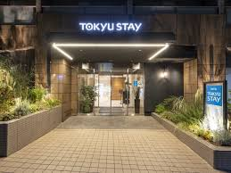
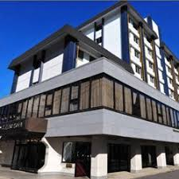

東京のホテル
ホテル椿山荘東京
ホテル椿山荘東京は、都心の喧騒を忘れさせるような広大な庭園と、歴史と伝統を感じさせる優雅な空間が魅力のラグジュアリーホテルです。約70,000平方メートルに及ぶ日本庭園は四季折々の美しい景観を楽しめ、宿泊者は庭園内を散策することで心身ともにリフレッシュできます。客室はクラシカルなデザインでまとめられており、全ての部屋からは庭園の緑が望めます。また、ホテル内には高級感あふれるレストランやスパが揃っており、特に「悠々庵」では、和食の真髄を味わうことができます。ビジネスや観光での利用はもちろん、ウェディングや特別な記念日にも最適なホテルです。
ザ・リッツ・カールトン東京
ザ・リッツ・カールトン東京は、東京ミッドタウンの高層階に位置する最高級ホテルで、東京のスカイラインを一望できる贅沢な滞在を提供します。全ての客室は高層階にあり、特に晴れた日には富士山や東京タワーが見渡せる絶景が広がります。客室内は、モダンでありながらも温かみのあるインテリアでまとめられており、快適さと機能性が両立した空間です。ダイニングオプションも充実しており、フレンチレストラン「アジュール フォーティファイブ」では、ミシュランスターシェフによる極上の料理を堪能できます。また、ホテル内のスパでは、心身を癒す特別なトリートメントが用意されており、極上のリラクゼーションを体験できます。
パークハイアット東京
パークハイアット東京は、新宿の中心にありながら、都会の喧騒から離れた静かなラグジュアリー空間を提供します。このホテルは、映画『ロスト・イン・トランスレーション』の舞台としても有名で、独特の洗練された雰囲気が漂います。客室は広々としており、床から天井までの窓からは、東京のダイナミックな夜景を楽しむことができます。ホテル内の「ニューヨークグリル＆バー」は、東京随一の夜景を眺めながら、美味しい料理とライブジャズを堪能できる人気のスポットです。また、屋上にあるプールやフィットネスセンターからは、東京のスカイラインを眺めながら運動を楽しめるのも魅力の一つです。
コンラッド東京
コンラッド東京は、銀座や築地市場、浜離宮恩賜庭園など、東京の主要観光地へのアクセスが非常に便利な立地にあります。このホテルは、洗練されたデザインとモダンなアートが融合した、スタイリッシュでありながらも温かみのある空間を提供します。客室は全て、東京湾や浜離宮庭園を見渡すパノラマビューが楽しめるデザインで、広々としたバスルームや高品質のアメニティが揃っています。また、ホテル内には複数のレストランがあり、特に和食レストラン「風花」では、旬の食材を使った繊細な料理が楽しめます。さらに、スパやプール、フィットネスセンターなどの設備も充実しており、滞在中は心身ともにリフレッシュできます。
シャングリ・ラ 東京
シャングリ・ラ 東京は、東京駅直結という便利な立地にありながら、都会の喧騒を忘れさせる静寂と贅沢を提供します。ホテル内は、東洋のエレガンスと西洋のクラシカルなデザインが見事に融合しており、豪華でありながらも温かみのある雰囲気です。客室からは東京スカイツリーや皇居外苑の美しい眺めが楽しめ、広々としたバスルームや豪華なベッドが完備されています。ダイニングオプションとしては、イタリアンレストラン「ピャチェーレ」や日本料理「なだ万」があり、いずれも最高級の料理とサービスを提供しています。また、シャングリ・ラならではのホスピタリティは、スパでも体験でき、極上のリラクゼーションを堪能できます。東京駅に近いことから、ビジネスや観光の拠点としても最適なホテルです。